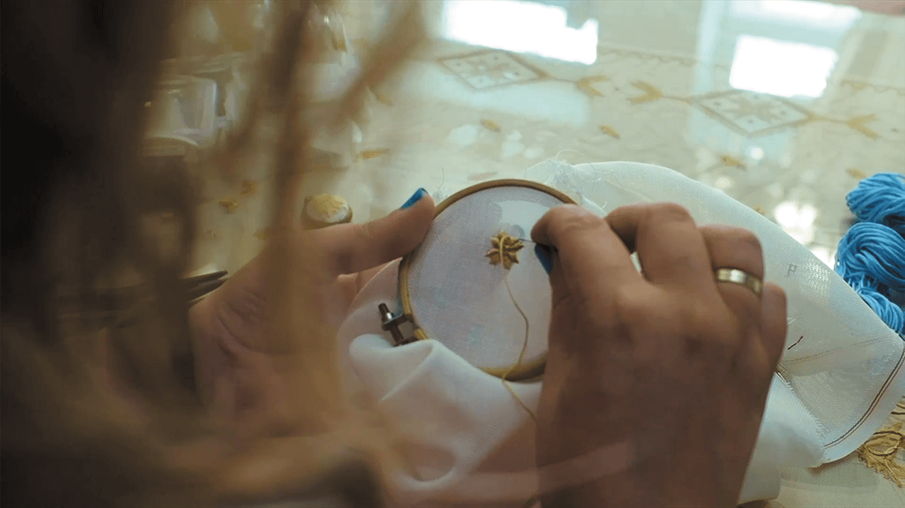

πορτφολιο

Καρσάνικη Βελονιά: η αναβίωση της παράδοσής μας στη Λευκάδα του 21ου αιώνα
Σεπτέμβριος 2021
Μια σημαντική έκφραση της λαογραφικής παράδοσης της Λευκάδας αποτελεί η κεντητική της τέχνη. Η ονομαστή «Καρσάνικη Βελονιά» αναπτύχθηκε στην ορεινή Λευκάδα, στο χωριό Καρυά -απ’ όπου πήρε και τ’ όνομά της- και γνώρισε μεγάλη άνθιση στις αρχές του 20ού αιώνα. Αξίζει δε να αναφερθεί ότι πρόσφατα έχει ενταχθεί στην άυλη πολιτιστική κληρονομιά της UNESCO.
Τα λευκαδίτικα κεντήματα μέχρι και πρόσφατα δεν έλειπαν από κανένα σπίτι. Προσωπικές παιδικές μου μνήμες ξυπνούν με το ανασκάλεμα του θέματος, άρρηκτα συνυφασμένες με τα περίτεχνα σχέδια των εργόχειρων που στόλιζαν και συνόδευαν ημέρες χαράς και οικογενειακών γιορτών.
Για πολλές δεκαετίες το κέντημα αποτελούσε μέσο βιοπορισμού για τις γυναίκες στο νησί, με τη δυσκολία της βελονιάς αλλά και το κόστος των υλικών να καθιστούν υψηλή την τιμή του κεντήματος, συμβάλλοντας έτσι στην οικονομική τους ανεξαρτητοποίηση. Με την πάροδο όμως του χρόνου η ενασχόληση αυτή άρχισε ν’ απομακρύνεται από τον μέχρι τότε πρωταγωνιστικό της ρόλο. Η χειραφέτηση, οι σπουδές και η δυναμική παρουσία των γυναικών στην αγορά εργασίας υπήρξαν καθοριστικοί παράγοντες για την εγκατάλειψη σύντομα της ασχολίας αυτής, αλλά και της διδασκαλίας της ίδιας της βελονιάς από τις παλαιότερες στις νεότερες γενιές. Τα ήδη υπάρχοντα κεντήματα άρχισαν να μένουν ολοένα και περισσότερο στα συρτάρια των νοικοκυριών, αφενός επειδή και οι ντόπιοι ακολουθούσαν τις αλλαγές που επέφερε η μόδα, αφετέρου από φόβο να μην φθαρούν τα κεντήματα, ακριβώς λόγω της υψηλής τους αξίας. Έτσι, τόσο η παραγωγή όσο και η ζήτηση μειώνονταν αποφασιστικά και το καρσάνικο κέντημα οδηγούνταν βαθμιαία στο περιθώριο.
Ήμουν ακόμη στο δημοτικό όταν η χαρακτηριστική εικόνα γυναικών μεγαλύτερης ηλικίας που κεντούσαν στο σοκάκι, στα σκαλάκια της εξώπορτας, παρέες-παρέες, μιλώντας, γελώντας, σιγά σιγά εξέλειπε...
Ιούνιος, 2021.
Σ’ ένα μικρό στενό, στην παλιά πόλη της Λευκάδας, εμφανίζεται ένα κομψό μαγαζάκι. Στις βιτρίνες του δεσπόζει το καρσάνικο κέντημα· σε μια μάλλον νέα μορφή αυτή τη φορά. Η Ελευθερία, εμπνευστής και δημιουργός των χειροτεχνημάτων, είναι από τους ελάχιστους νέους ανθρώπους στο νησί που γνωρίζουν τη βελονιά. Αγωνιά για την εξέλιξη της τοπικής μας παράδοσης και αναζητά τρόπους να συμβάλλει στη διατήρησή της στο χρόνο. Καταφέρνει τελικά και τη μεταπλάθει, αρχικά στη μορφή κοσμήματος, μετέπειτα και άλλων αντικειμένων, αλλάζοντας έτσι τη χρήση της και θέτοντάς την στην υπηρεσία των σύγχρονων αναγκών.
Το ντοκιμαντέρ έχει ως θέμα αυτήν ακριβώς την αναβίωση της παραδοσιακής μας τέχνης, μέσα από τη σκοπιά μιας σύγχρονης κοπέλας και την ευεργετική της τελικά χειρονομία και προσφορά σε ένα κομμάτι του πολιτισμού μας, που μέχρι πρότινος κινδύνευε να σβηστεί στο πέρασμα του χρόνου.
Βιβλιογραφία
• Αρβανίτη, Μαύρα, «Καρσάνικο Κέντημα (Καρυά Λευκάδας) | 2019» Άυλη Πολιτιστική Κληρονομιά της Ελλάδας, Αύγουστος 2018, https://ayla.culture.gr/karsaniko-kentima/
• Δουβίτσας, Ν.Π., Η Καρσάνικη Βελονιά. Πνευματικό Κέντρο Κοινότητας Καρυάς. Καρυά, Λευκάδα, 1995
Ιστότοπος: https://youtu.be/xPCDpe720OQ